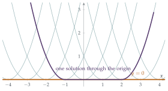

STEP III 1994, Question 4
Read the question before you go on. It is in the STEP Support Programme’s question database: step.maths.org/questions/94-s3-q4
The hook
A differential equation is a rule that tells you how a quantity changes: Newton’s laws tell a planet how to move, given where it is now. The classical picture of physics is that this is enough: know the state of the world now, and the laws determine its entire future. Pierre-Simon Laplace imagined an intellect that, knowing every position and velocity, could predict everything. That picture rests on a mathematical assumption: that a differential equation, with a starting condition, has exactly one solution.
This question shows that the assumption can fail. The innocent-looking equation \((y')^2 = 4y\) has solutions that run along the \(x\)-axis and then, at a moment of their own choosing, peel away. Through some points pass infinitely many solutions. Knowing the present does not determine the future. Finding out exactly when uniqueness holds is one of the first theorems of a university course on differential equations.
Before you start
Take the square root of both sides: \(y' = \pm2\sqrt{y}\). Try \(y = (x - c)^2\). Does it satisfy the equation? Is there an even simpler solution?
If \(y = (x - c)^2\), then \(y' = 2(x - c)\) and \((y')^2 = 4(x - c)^2 = 4y\). So every parabola \(y = (x - c)^2\) is a solution, for every \(x\). And \(y = 0\) is also a solution: \((0)^2 = 4 \times 0\). Keep that last one in mind; it is the key to the whole question.
Working it through
Stage 1 Solutions through a point
Which parabolas \(y = (x - c)^2\) pass through \((a, b^2)\)?
We need \((a - c)^2 = b^2\), so \(a - c = \pm b\), that is, \(c = a - b\) or \(c = a + b\). Since \(b \neq 0\) these are different, giving the two solutions \[y = (x - a + b)^2 \qquad\text{and}\qquad y = (x - a - b)^2. \qed\] (We should also check that we have not missed any: on a region where \(y > 0\), \(y' = \pm2\sqrt{y}\) with a fixed sign, and \(\frac{\mathrm{d}}{\mathrm{d}x}\sqrt y = \frac{y'}{2\sqrt y} = \pm1\), so \(\sqrt y = \pm(x - c)\), giving these parabolas. So near the given point, and for as long as \(y\) stays positive, these are the only two solutions. Once a solution reaches the \(x\)-axis, though, it can be glued to the zero solution, as we shall see in Stage 3, and that gives infinitely many more solutions defined for all \(x\). The “two solutions” of the question are the two parabolas.)
Stage 2 Two points and a common solution
A solution through the origin must be \(y = x^2\) (the parabola with \(c = 0\)). It passes through height \(1\) at \(x = 1\) and \(x = -1\). So take \((a_1, 1) = (1, 1)\) and \((a_2, 1) = (-1, 1)\).
Through \((1, 1)\) (so \(a = 1\), \(b = \pm1\)), the solutions are \(y = x^2\) and \(y = (x - 2)^2\). Through \((-1, 1)\) they are \(y = (x + 2)^2\) and \(y = x^2\). The solution through the origin is the same curve \(y = x^2\) in both cases.■
Stage 3 The whole family, and a common tangent
Sketch several of the parabolas \(y = (x - c)^2\) for different \(c\). Which line touches every one of them? Is that line itself a solution?
Every parabola \(y = (x - c)^2\) touches the \(x\)-axis at its vertex \((c, 0)\), so the \(x\)-axis is a common tangent to the whole family: their envelope (Figure 8.1.1). And the \(x\)-axis, \(y = 0\), is itself a solution of the differential equation. It is not one of the parabolas; it is a separate, singular solution.
Stage 4 Why it matters
Start at the origin. Which solutions pass through it? Can you build a solution that follows the \(x\)-axis for a while and then leaves it?
Through the origin pass \(y = x^2\) and \(y = 0\). But much more is true. Because each parabola meets the \(x\)-axis tangentially (both have gradient \(0\) there), you can glue pieces together smoothly: for any \(c_1 \leq 0 \leq c_2\), \[y = \begin{cases} (x - c_1)^2 & x < c_1, \\ 0 & c_1 \leq x \leq c_2, \\ (x - c_2)^2 & x > c_2 \end{cases}\] is a differentiable function satisfying \((y')^2 = 4y\) everywhere, and it passes through the origin. There are infinitely many solutions through every point on the \(x\)-axis: a solution can sit at \(y = 0\) for as long as it likes, and then leave. The common tangent is exactly where uniqueness breaks down.■

Looking back
Look for simple solutions first. Trying \(y = (x - c)^2\) and \(y = 0\) found the whole picture.
Envelopes give singular solutions. The common tangent to a family of solutions can itself be a solution that is not in the family.
Gluing. Where two solutions touch tangentially, they can be joined into a new differentiable solution. This is how non-uniqueness spreads.
What’s really going on
The Picard–Lindelöf theorem (proved by Émile Picard and Ernst Lindelöf around 1890–1894) says that the equation \(y' = F(x, y)\) with \(y(x_0) = y_0\) has exactly one solution near \(x_0\), provided \(F\) is Lipschitz in \(y\): there is a constant \(L\) with \(|F(x, y_1) - F(x, y_2)| \leq L|y_1 - y_2|\). Roughly, \(F\) must not change infinitely fast as \(y\) changes. Our equation is \(y' = \pm2\sqrt y\), and \(\sqrt y\) has infinite slope at \(y = 0\): it is not Lipschitz there, and that is exactly where uniqueness fails. (Giuseppe Peano showed in 1886 that continuity of \(F\) alone guarantees that a solution exists, but not that it is unique.) The proof of Picard–Lindelöf uses an iteration that converges by the contraction mapping principle of Section 2.2.
The leaking bucket
Here is a physical example. A bucket with a hole in the bottom empties according to Torricelli’s law: the height \(h\) of water satisfies \(h' = -k\sqrt h\). Run time forwards and everything is fine: the bucket empties and stays empty. But run time backwards: if you find an empty bucket, the equation cannot tell you when it emptied. The solution \(h = 0\) for all time and the solutions that were full until some moment and then drained are all consistent with “empty now”. The non-uniqueness is the mathematical shadow of the fact that information about the past has been lost.
Norton’s dome
In 2003 the philosopher John Norton described a frictionless dome shaped so that a ball placed exactly at the top obeys Newton’s laws in the form \(r'' = \sqrt r\). One solution is that the ball sits at the top for ever. But there are others, in which it sits there for any length of time and then spontaneously rolls off in any direction, without any cause. The example is still debated: is classical mechanics deterministic after all? Mathematically, it is non-uniqueness of exactly the kind in this question.
The thinking skill
Finding a solution does not show it is the only one. Ask whether others exist, especially where the equation involves functions that are not smooth.
At university, existence and uniqueness theorems tell you exactly what conditions are needed. Here a square root, with its infinite slope at zero, was enough to break uniqueness.
Try this next
Two rates. Try STEP II 2018, Question 8. It solves two growth equations by substitution. Then ask why \(y = 0\) is also a solution with the same starting value, and what that says about uniqueness.
The leaking bucket. Solve \(h' = -k\sqrt h\) with \(h(0) = h_0 > 0\). When is the bucket empty? Write down two different solutions with \(h(T) = 0\) for some \(T\) and \(h(t) = 0\) for all \(t \geq T\).
Uniqueness restored. Show that \(y' = 2y\) with \(y(0) = 0\) has only the solution \(y = 0\). (Hint: consider \(\frac{\mathrm{d}}{\mathrm{d}x}(ye^{-2x})\).) What property does \(2y\) have that \(2\sqrt y\) lacks?
Cubes. Find all solutions of \(y' = 3y^{2/3}\) through the origin.
Further reading
Morris Hirsch, Stephen Smale & Robert Devaney, Differential Equations, Dynamical Systems, and an Introduction to Chaos (Academic Press). Existence and uniqueness, and much of the rest of this chapter.
George Simmons, Differential Equations with Applications and Historical Notes (CRC Press). A classic, full of history; discusses singular solutions and envelopes.
John Norton, “The dome: an unexpectedly simple failure of determinism”, Philosophy of Science 75 (2008). Short and readable.